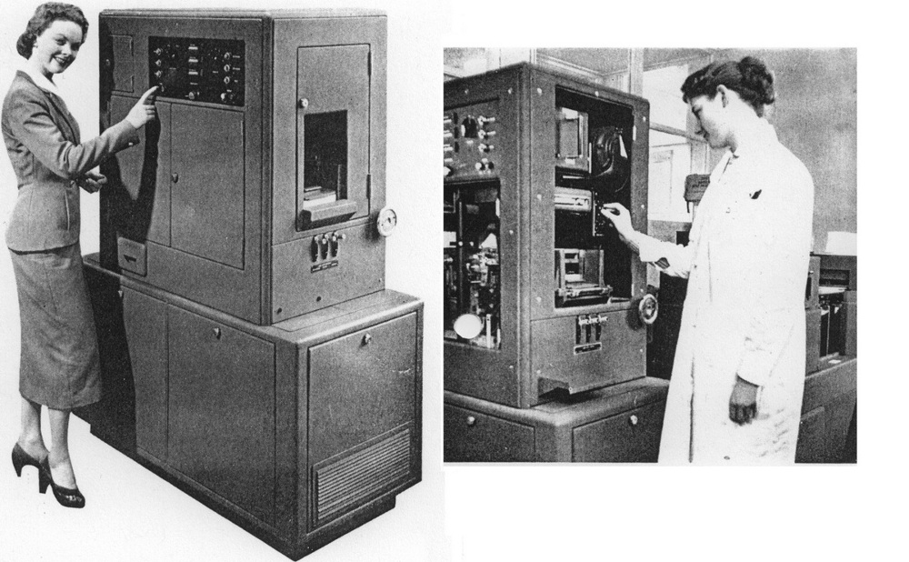

Labour and Gender in Computing
Jentery Sayers | Unlearning the Internet | Week 1
DHum 150 | UVic English | 10 January 2019
Slides Online: jentery.github.io/150/slides/week1
Use your left + right arrow keys to navigate this slidedeck.
This survey is not intended to be exhauastive.
Important Considerations
"Firsts" are important
But "firsts" can be difficult to determine
And "firsts" tend to motivate a lot of clickbait
Gender is not binary
Labour is difficult to trace and historicize
Ada Augusta,
Countess of Lovelace
articulated core elements of computer languages and
fundamental concepts of computer programming
but her work was practically ignored for ~100 years
"The Analytical Engine has no pretensions whatever to originate anything. It can do whatever we know how to order it to perform. It can follow analysis; but it has no power of anticipating any analytical relations or truths. Its province is to assist us in making available what we are already acquainted with. This it is calculated to effect primarily and chiefly of course, through its executive faculties; but it is likely to exert an indirect and reciprocal influence on science itself in another manner. For, in so distributing and combining the truths and the formulæ of analysis, that they may become most easily and rapidly amenable to the mechanical combinations of the engine, the relations and the nature of many subjects in that science are necessarily thrown into new lights, and more profoundly investigated." (published note "G," October 1842)
Read Lovelace's notes (they appear after her translation)
ENIAC Programmers
Frances Bilas Spence, Jean Jennings Bartik, Marlyn Wescoff Meltzer, Kathleen McNulty Mauchly Antonelli, Frances Elizabeth Holberton, and Ruth Lichterman Teitelbaum in 1940s
first software application, first sort routines, and
first computer programming instructors
but contributions mostly ignored until 1980s
For more, see The Computers (a documentary)
Trailer care of the ENIAC Programmers Project
Early Doctorates Involving
Modern Computers
Beatrice "Trixie" Worsley
1952: PhD in mathematical physics from Cambridge
also one of Canada's first computer scientists,
who worked on one of the first compilers (Transcode)
for one of Canada's first electronic computers (FERUT)
mostly ignored by historical accounts and search engines (e.g., ACM)
lack of recognition and also promoted late during her career
More from U of T News
Hidden Human Computers
11 black women who worked for NASA (1950s)
Contributions ignored due to segregation and racism
absent from Hidden Figures (film) and mostly from search engines
Video care of Duchess Harris and Human Computers project
Navajo Contributions to
Circuit Manufacturing
absent from official histories of Silicon Valley
protestors from American Indian Movement helped to
shut down the plant in 1975 due to poor labour conditions
"I learned that from 1965-1975 the Fairchild Corporation’s Semiconductor Division operated a large integrated circuit manufacturing plant in Shiprock, New Mexico, on a Navajo reservation. During this time the corporation was the largest private employer of Indian workers in the U.S. The circuits that the almost entirely female Navajo workers produced were used in devices such as calculators, missile guidance systems, and other early computing devices." (Lisa Nakamura)
Quote of Nakamura from the Computer History Museum
Lynn Conway Fired by
IBM in 1968
key contributions to chip design and computer processing
fired by IBM during gender transition
no expression of regret or official apology from IBM
later received multiple awards, including Computer Pioneer Award, IEEE Computer Society, 2009, and an honorary doctorate from UVic
See Conway's letter to IBM and related essay
"Powers Girl" Ad

Image care of Marie Hicks.
Return to the course website.